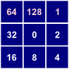

This tool is used to generate a flow pointer grid (i.e. flow direction) using the FD8 (Freeman, 1991) algorithm. FD8 is a multiple-flow-direction (MFD) method because the flow entering each grid cell is routed one or more downslope neighbours, i.e. flow divergence is permitted. The user must specify the name of a digital elevation model (DEM) that has been hydrologically corrected to remove all spurious depressions and flat areas. DEM pre-processing is usually achived using the Fill Depressions tool.
In Whitebox GAT, the designation of flow pointers to each of the eight neighbouring cells of each grid cell use the following clockwise, base-2 numeric naming convention:

In the case of the FD8 algorithm, some portion of the flow entering a grid cell will be sent to each downslope neighbour. Thus, the FD8 flow-pointer value is the sum of each of the individual pointers for all downslope neighbours. For example, if a grid cell has downslope neighbours to the northeast, east, and south the corresponding FD8 flow-pointer value will be 1 + 2 + 8 = 11. Using the naming convention above, this is the only combination of flow-pointers that will result in the combined value of 11. Using the base-2 naming convention allows for the storage of complex combinations of flow-points using a single numeric value, which is the reason for using this somewhat odd convention.
Notice that unlike most of the other flow algorithms available in Whitebox GAT, the FD8 flow-accumulation tool does not require the input of the FD8 flow-pointer. This is because the flow directions are determined automatically from the DEM by the accumulation algorithm.
Grid cells possessing the NoData value in the input DEM are assigned the NoData value in the output image. The output raster is of the float data type and continuous data scale.
The following is an example of a Python script that uses this tool:
wd = pluginHost.getWorkingDirectory()
demFile = wd + "DEM.dep"
outputFile = wd + "pointer.dep"
args = [demFile, outputFile]
pluginHost.runPlugin("FlowPointerFD8", args, False)
This is a Groovy script also using this tool:
def wd = pluginHost.getWorkingDirectory()
def demFile = wd + "DEM.dep"
def outputFile = wd + "pointer.dep"
String[] args = [demFile, outputFile]
pluginHost.runPlugin("FlowPointerFD8", args, false)